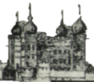
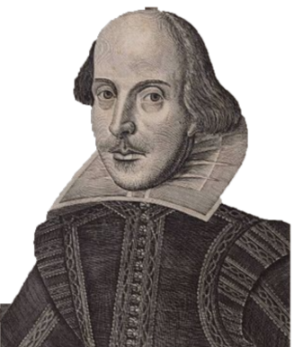
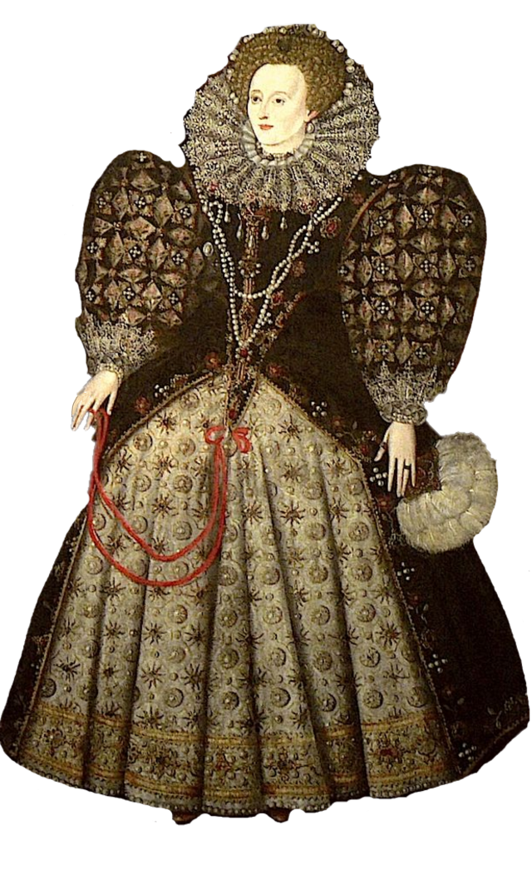
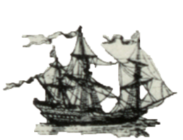

<div class ="container">
<div class="header">
  <h3 class="font-weight-light mt-4">Use your keyboard arrows or the controls to move around the image. Try and find all the items on the list. When you find something, click on it on the list to tick it off.</h3> <br>
</div>

  <div class="row">
    <div class="col-2">
      <ul class="list-group findList text-center">
        <!--      show as active once item has been found-->
        <li class="list-group-item" id="item1" (click)="check(1)">St Paul's Church</li>
        <li  class="list-group-item " id="item2" (click)="check(2)">The Tower</li>
        <li  class="list-group-item " id="item3" (click)="check(3)">Shakespeare</li>
        <li  class="list-group-item " id="item4" (click)="check(4)">Queen Elizabeth II</li>
        <li  class="list-group-item " id="item5" (click)="check(5)">The Gally Fuste</li>

      </ul>
    </div>


    <div class="col-4">
<!--    <div class="container2" id="c2" [style.backgroundPositionX]="backgroundLeft" [style.backgroundPositionY]="backgroundTop">-->
<div class="imageContainer">
  <div id="panorama" [style.left]="backgroundLeft" [style.top]="backgroundTop">
  
<!--    <a (click)="clicked()" id="stpauls"></a>-->
</div>

 

</div>


<!--    </div>-->
  </div>


  </div>


<!--  -->

  <div class ='controls'>
    <button id="up" class="btn btn-primary btn-sm" (click)="moveDown()">
      <svg width="2em" height="2em" viewBox="0 0 16 16" class="bi bi-arrow-up" fill="currentColor" xmlns="http://www.w3.org/2000/svg">
        <path fill-rule="evenodd" d="M8 3.5a.5.5 0 0 1 .5.5v9a.5.5 0 0 1-1 0V4a.5.5 0 0 1 .5-.5z"/>
        <path fill-rule="evenodd" d="M7.646 2.646a.5.5 0 0 1 .708 0l3 3a.5.5 0 0 1-.708.708L8 3.707 5.354 6.354a.5.5 0 1 1-.708-.708l3-3z"/>
      </svg></button>
    <button id="left" class="btn btn-primary btn-sm" (click)="moveRight()">
      <svg width="2em" height="2em" viewBox="0 0 16 16" class="bi bi-arrow-left" fill="currentColor" xmlns="http://www.w3.org/2000/svg">
        <path fill-rule="evenodd" d="M5.854 4.646a.5.5 0 0 1 0 .708L3.207 8l2.647 2.646a.5.5 0 0 1-.708.708l-3-3a.5.5 0 0 1 0-.708l3-3a.5.5 0 0 1 .708 0z"/>
        <path fill-rule="evenodd" d="M2.5 8a.5.5 0 0 1 .5-.5h10.5a.5.5 0 0 1 0 1H3a.5.5 0 0 1-.5-.5z"/>
      </svg>
      </button>
    <button id="right" class="btn btn-primary btn-sm" (click)="moveLeft()">
      <svg width="2em" height="2em" viewBox="0 0 16 16" class="bi bi-arrow-right" fill="currentColor" xmlns="http://www.w3.org/2000/svg">
        <path fill-rule="evenodd" d="M10.146 4.646a.5.5 0 0 1 .708 0l3 3a.5.5 0 0 1 0 .708l-3 3a.5.5 0 0 1-.708-.708L12.793 8l-2.647-2.646a.5.5 0 0 1 0-.708z"/>
        <path fill-rule="evenodd" d="M2 8a.5.5 0 0 1 .5-.5H13a.5.5 0 0 1 0 1H2.5A.5.5 0 0 1 2 8z"/>
      </svg></button>
    <button id="down" class="btn btn-primary btn-sm" (click)="moveUp()">
      <svg width="2em" height="2em" viewBox="0 0 16 16" class="bi bi-arrow-down" fill="currentColor" xmlns="http://www.w3.org/2000/svg">
        <path fill-rule="evenodd" d="M4.646 9.646a.5.5 0 0 1 .708 0L8 12.293l2.646-2.647a.5.5 0 0 1 .708.708l-3 3a.5.5 0 0 1-.708 0l-3-3a.5.5 0 0 1 0-.708z"/>
        <path fill-rule="evenodd" d="M8 2.5a.5.5 0 0 1 .5.5v9a.5.5 0 0 1-1 0V3a.5.5 0 0 1 .5-.5z"/>
      </svg></button>

  </div>


  <div *ngIf="complete">
    <div class="box sb3">
 Well done, you have found all the hidden objects! <br>
      <button class="btn btn-primary" (click)="backToCosmoIntro()">Return to Cosmorama Rooms menu</button>
    </div>
    
  </div>


  <button class="btn btn-primary returnBtn" (click)="returnToBoard()">
    <svg width="1em" height="1em" viewBox="0 0 16 16" class="bi bi-arrow-return-left" fill="currentColor" xmlns="http://www.w3.org/2000/svg">
      <path fill-rule="evenodd" d="M5.854 5.646a.5.5 0 0 1 0 .708L3.207 9l2.647 2.646a.5.5 0 0 1-.708.708l-3-3a.5.5 0 0 1 0-.708l3-3a.5.5 0 0 1 .708 0z"/>
      <path fill-rule="evenodd" d="M13.5 2.5a.5.5 0 0 1 .5.5v4a2.5 2.5 0 0 1-2.5 2.5H3a.5.5 0 0 1 0-1h8.5A1.5 1.5 0 0 0 13 7V3a.5.5 0 0 1 .5-.5z"/>
    </svg>
    Return to Explorer Board</button>
</div>

